Golden Gate Bridge
Build the Golden Gate Bridge with accurate structural hierarchy: two International Orange open-frame towers, a continuous road deck, paired sagging main cables and evenly spaced vertical hangers attached at both ends. Use a wide three-quarter viewpoint, cool ocean, distant hills and warm afternoon sun. Prioritize structural correctness over decoration.
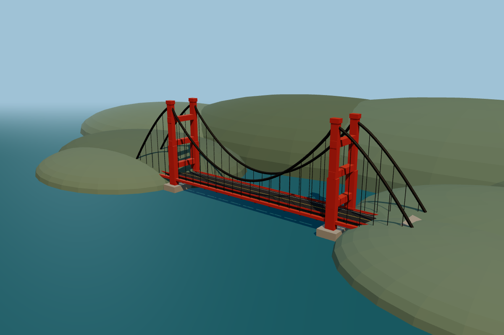
THREE
7/10Readable 3D suspension structure and coastal setting; plain lighting and cable material.
20.7s · $0.00529 · 10,522 completion tokensOpen artwork

CANVAS
0/10Empty returned document after the 32k completion limit. No artwork to assess.
70.2s · $0.01613 · 32,218 completion tokensOpen artwork
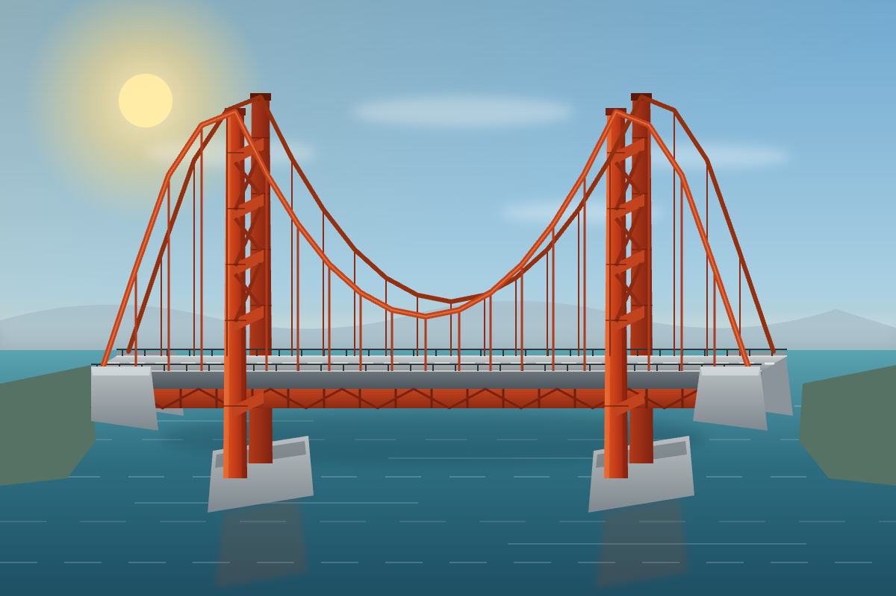
SVG
8/10Warm, legible towers, hangers and cable sweep; attractive 2D atmosphere, simplified near-frontal perspective.
34.6s · $0.00942 · 18,789 completion tokensOpen artwork
Eiffel Tower
Create a collectible miniature diorama of the Eiffel Tower on a circular landscaped base. Emphasize four splayed lattice legs, the wide arch at the base, two observation platforms and a tapering open lattice spire. Tiny paths and trees establish scale. Refined warm brass and iron materials, soft studio lighting, lovely three-quarter composition.

THREE
8.5/10Strong open lattice and true three-quarter volume on a landscaped circular base.
29.6s · $0.00807 · 16,084 completion tokensOpen artwork
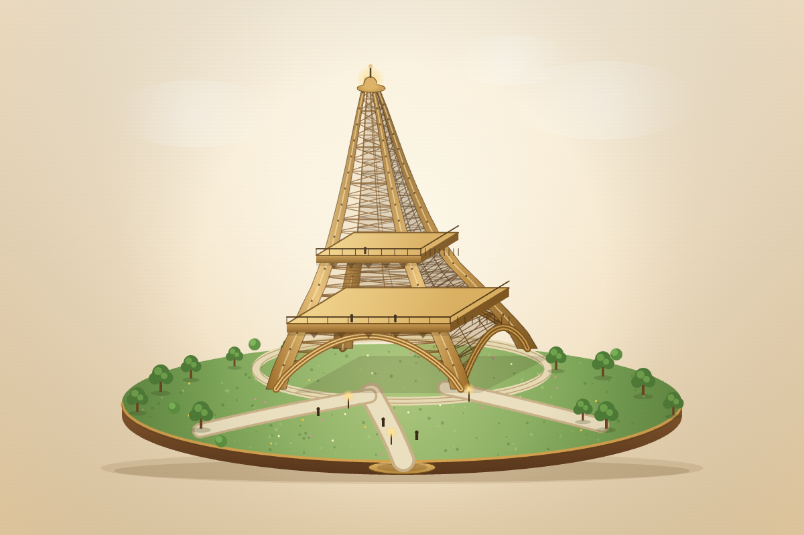
CANVAS
8/10Elegant brass palette and dimensional paths; lattice and arches are visibly stylized.
54.1s · $0.01495 · 29,854 completion tokensOpen artwork
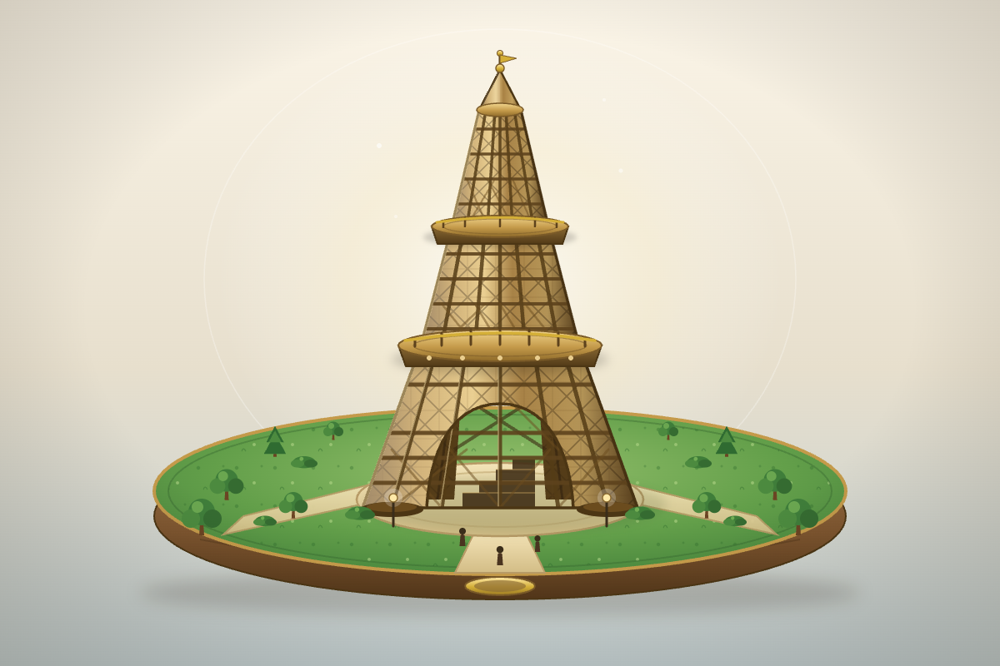
SVG
8/10Polished miniature, clean lattice, shadows and paths; more frontal and squat than the landmark.
34.1s · $0.00928 · 18,506 completion tokensOpen artwork
Taj Mahal
Render the Taj Mahal as a serene architectural scene: central ivory onion dome with finial above a symmetrical building with a tall central pointed portal, smaller domed kiosks and four slender corner minarets. A long foreground reflecting pool and flanking formal gardens guide the eye to the facade. Symmetry, soft dawn light, pale pink sky, polished proportions.

THREE
7.5/10Convincing massing and minarets; foreground planting crowds the frame and dome is heavy.
20.6s · $0.00564 · 11,226 completion tokensOpen artwork
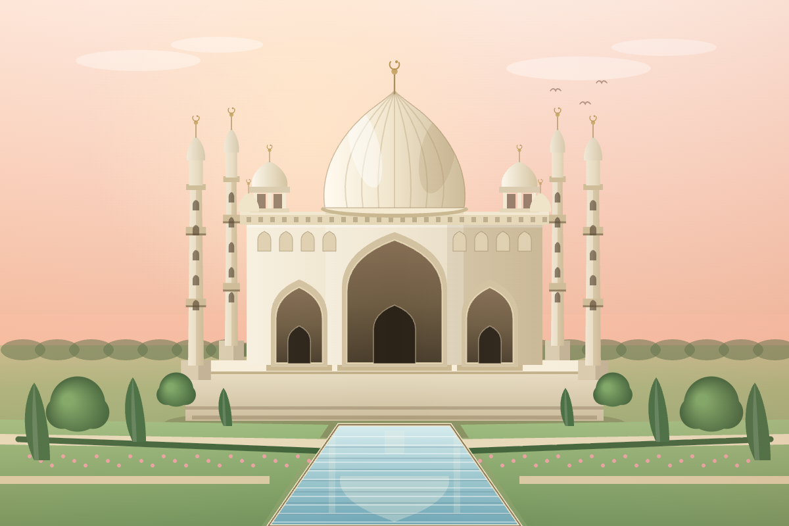
CANVAS
8.5/10Balanced facade, garden and reflection composition with delicate warm gradients.
23.3s · $0.00633 · 12,598 completion tokensOpen artwork
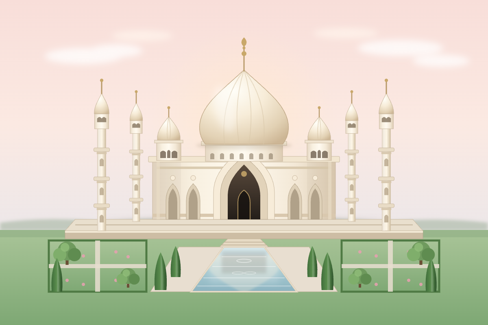
SVG
8.5/10Refined facade hierarchy and restrained dawn palette; formal pool is shorter than the brief suggests.
26.3s · $0.00742 · 14,786 completion tokensOpen artwork
Colosseum
Build a recognizable Colosseum as a detailed architectural cutaway: elliptical amphitheater, three stacked rings of repeated open arches, a partially broken upper wall and visible stepped seating surrounding the exposed arena. Warm travertine stone, sparse Roman ground context, elevated three-quarter view. Make openings genuine empty spaces between columns and arch segments.
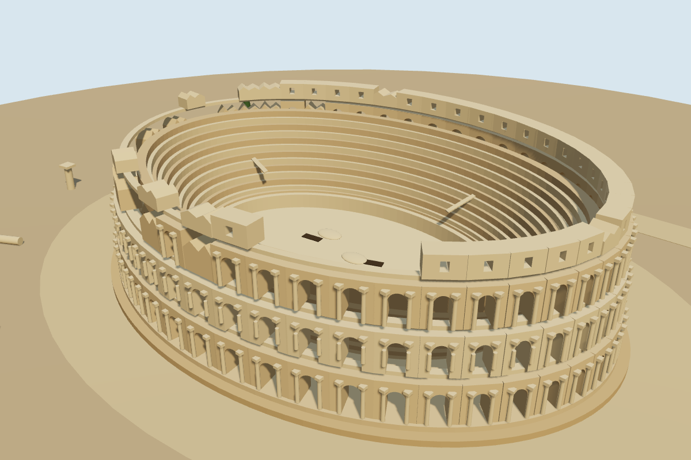
THREE
8.5/10Strong elliptical rings, repeated openings and visible stepped seating.
29.2s · $0.00772 · 15,393 completion tokensOpen artwork
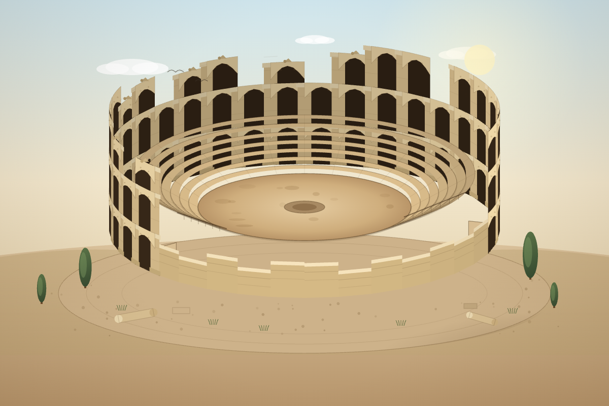
CANVAS
8/10Clear cutaway and stacked arches with pleasing stone tones; foreground wall is very low.
48.0s · $0.01195 · 23,848 completion tokensOpen artwork
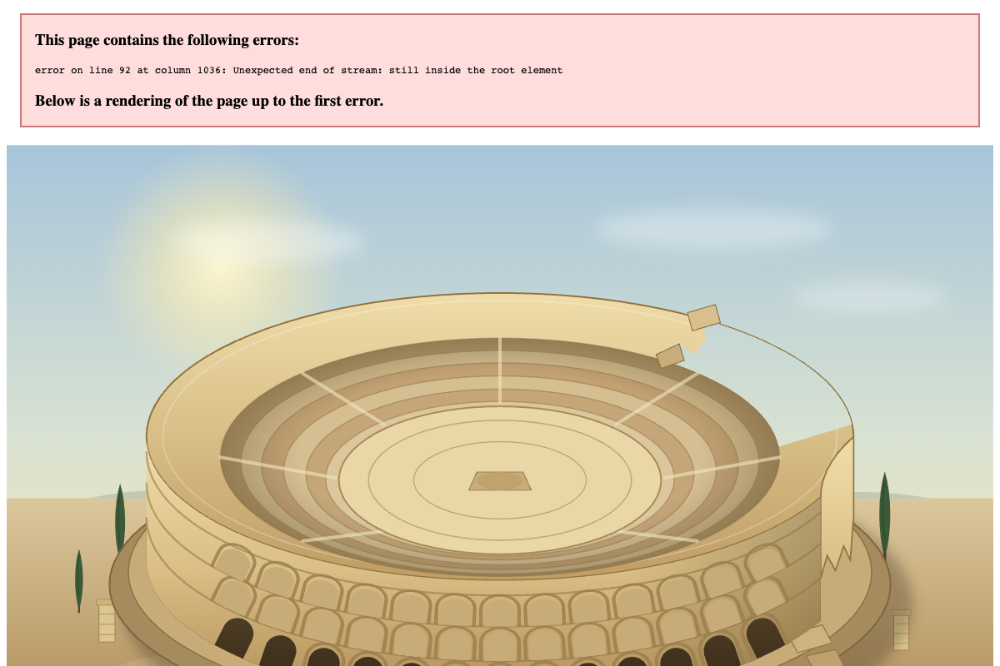
SVG
2/1032k-truncated SVG produces an XML error banner and partial, clipped architecture.
64.1s · $0.01612 · 32,181 completion tokensOpen artwork
Statue of Liberty
Create a refined low-poly Statue of Liberty: oxidized copper robed standing figure on a stepped stone pedestal, seven-point crown, right arm raised high with a gold flame torch, left arm holding a tablet. Build a readable human silhouette with deliberate geometry, distinguish arms and head, include the star-shaped island foundation and blue harbor. Strong side lighting.
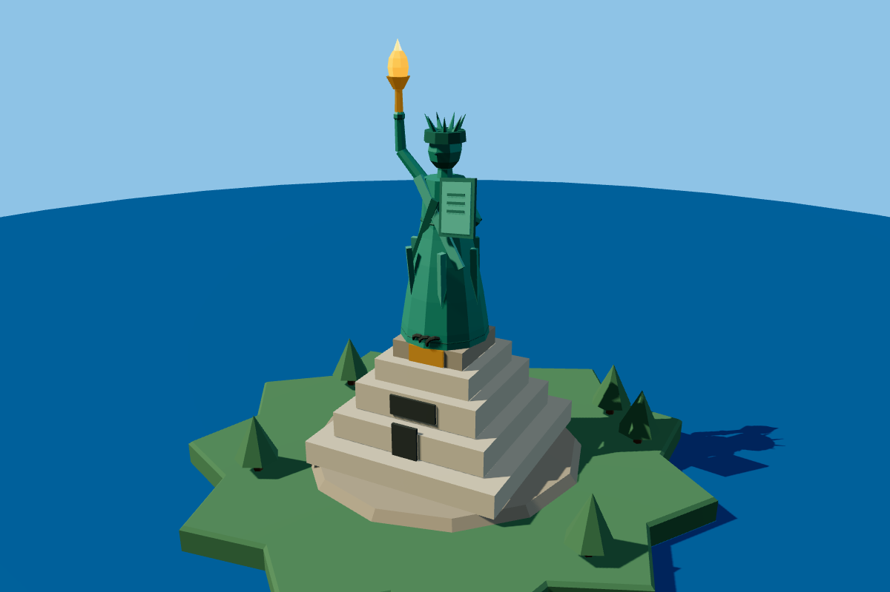
THREE
6.5/10Recognizable torch and copper silhouette with island context; face and anatomy remain blocky.
18.9s · $0.00535 · 10,640 completion tokensOpen artwork
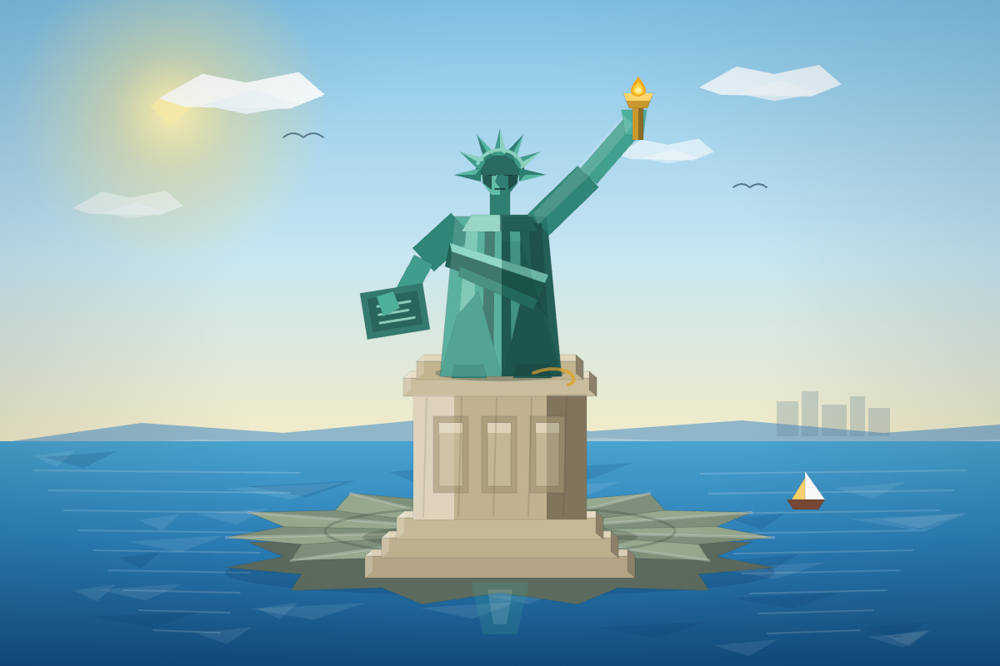
CANVAS
7.5/10Readable faceted figure, tablet, pedestal and lively harbor; anatomy is simplified.
30.3s · $0.00632 · 12,591 completion tokensOpen artwork
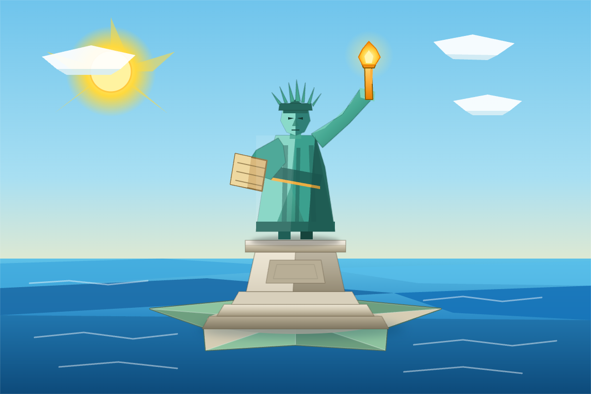
SVG
7.5/10Clear crown, torch and tablet in a crisp graphic scene; relatively schematic figure and foundation.
27.1s · $0.00596 · 11,868 completion tokensOpen artwork
Sydney Opera House
Create a sculptural paper-craft Sydney Opera House beside a deep blue harbor. Arrange multiple groups of overlapping tall pointed white sail-shell roofs of different sizes on a terracotta podium, each shell curved and sharply peaked. Show the interleaved roof silhouette from a three-quarter harbor viewpoint. Crisp ivory material, soft ambient shadows, restrained surrounding details.
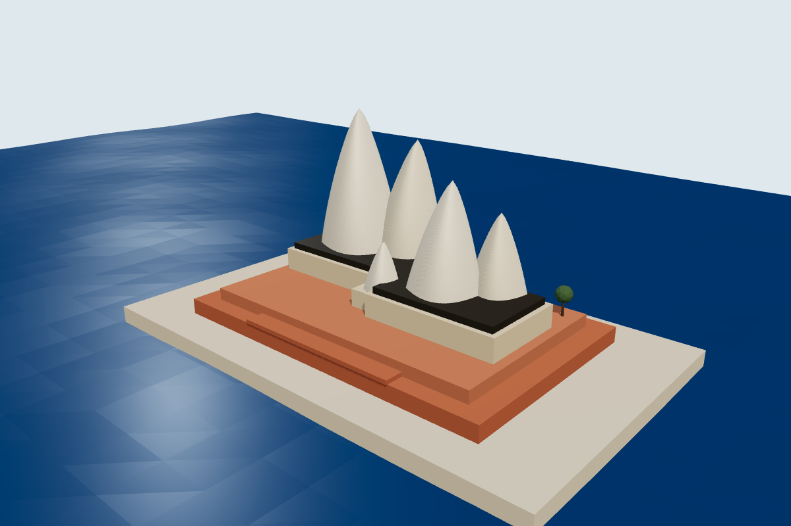
THREE
5/10Clean podium and harbor, but the repeated pointed cones miss the interleaved curved sail shells.
29.5s · $0.00783 · 15,594 completion tokensOpen artwork
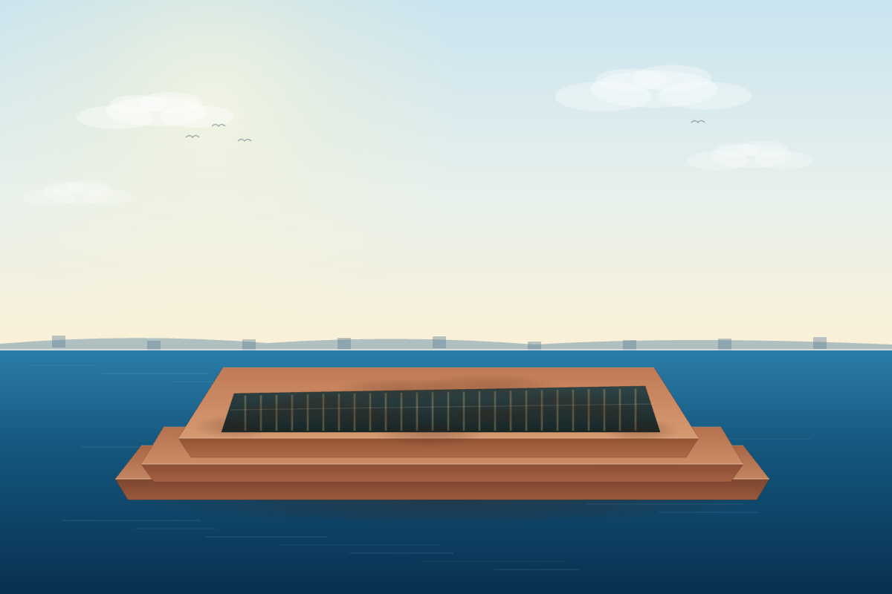
CANVAS
2/10Runtime typo baseY864 stops drawing before the shells; only harbor and podium appear.
23.6s · $0.00688 · 13,708 completion tokensOpen artwork
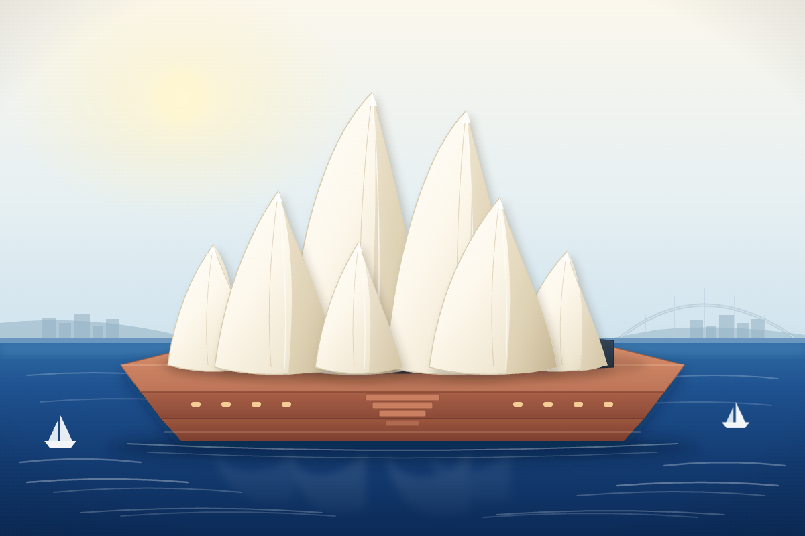
SVG
6.5/10Soft paper tones and overlapping pointed shells; front-facing roof group remains closer to abstract sails.
20.9s · $0.00543 · 10,812 completion tokensOpen artwork
Pyramids of Giza
Create a cinematic desert scene featuring the three Pyramids of Giza at distinct realistic relative scales. Use square-based pyramids with clean triangular faces and subtle horizontal stone courses, sandy ground with gentle dune variation, low warm sun, long soft shadows and atmospheric depth. The great pyramid is the focal point. Elegant restrained composition from a low elevated camera.

THREE
7/10Three legible pyramid masses and long shadows; sparse surface detail and flat desert.
26.5s · $0.00706 · 14,064 completion tokensOpen artwork
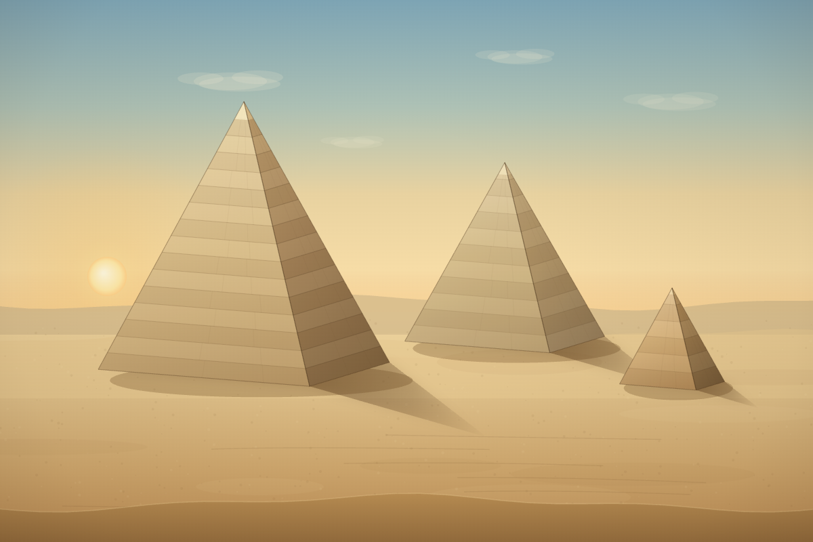
CANVAS
8/10Good relative scales, stone courses, face shading and broad desert light.
47.7s · $0.01159 · 23,126 completion tokensOpen artwork
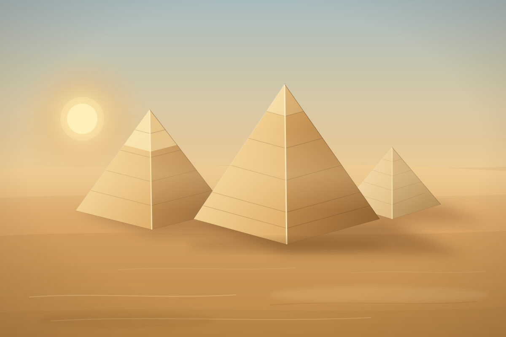
SVG
8/10Polished low sun and atmospheric sand with clear triangular faces; highly idealized arrangement.
18.8s · $0.00491 · 9,766 completion tokensOpen artwork
Elizabeth Tower / Big Ben
Create a recognizable Elizabeth Tower (Big Ben) at blue hour. Model the tall square tan Gothic clock tower, large luminous round clock faces on all four sides, decorative vertical buttresses, belfry and steep dark pyramidal spire with finial. Add a modest Westminster wing, warm ground lights and dark blue sky. The clock hands and hour marks should be clearly visible.

THREE
8/10Recognizable tall clock tower, steep spire and modest wing with convincing night lighting.
25.3s · $0.00654 · 13,027 completion tokensOpen artwork
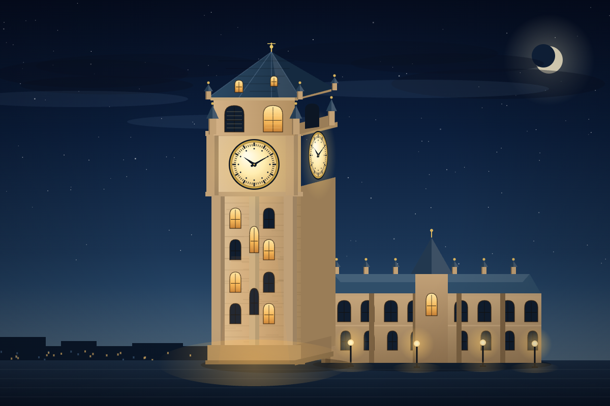
CANVAS
7/10Rich clock detail and atmospheric blue hour, but the shortened roof weakens the Gothic silhouette.
25.4s · $0.00672 · 13,384 completion tokensOpen artwork
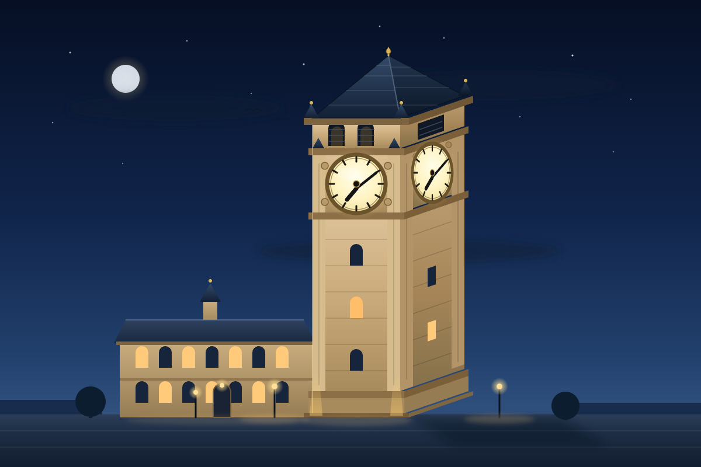
SVG
6.5/10Clear luminous clocks and clean planes; roof and belfry are too squat for Elizabeth Tower.
45.0s · $0.01242 · 24,782 completion tokensOpen artwork
Christ the Redeemer
Sculpt Christ the Redeemer as a sophisticated monochrome clay architectural maquette on Corcovado mountain. A readable robed human figure stands upright with both arms fully outstretched horizontally, a small defined head, hands and flowing vertical robe folds, on its pedestal. Use soft off-white clay for statue, muted green-gray mountain layers, museum lighting and a clear frontal three-quarter camera.
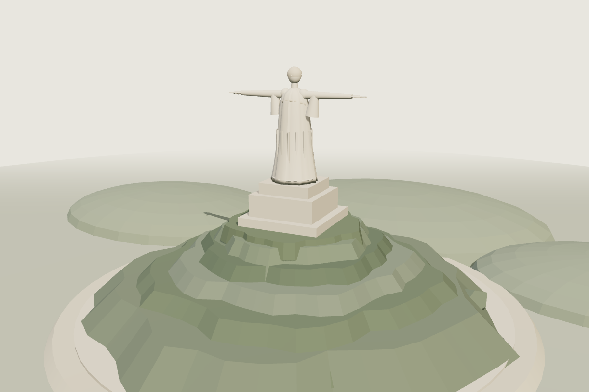
THREE
6.5/10Readable maquette and mountain but thin outstretched arms and tiny head lack presence.
21.3s · $0.00574 · 11,421 completion tokensOpen artwork
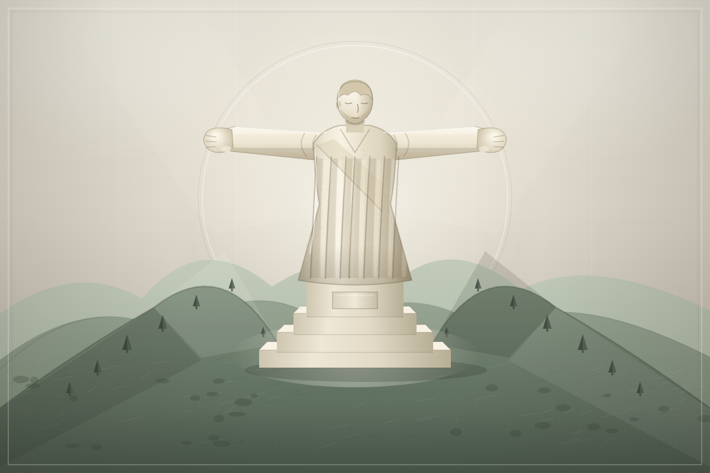
CANVAS
8/10Strong robed human silhouette, face and folds against layered mountains; more illustration than clay.
29.2s · $0.00837 · 16,679 completion tokensOpen artwork
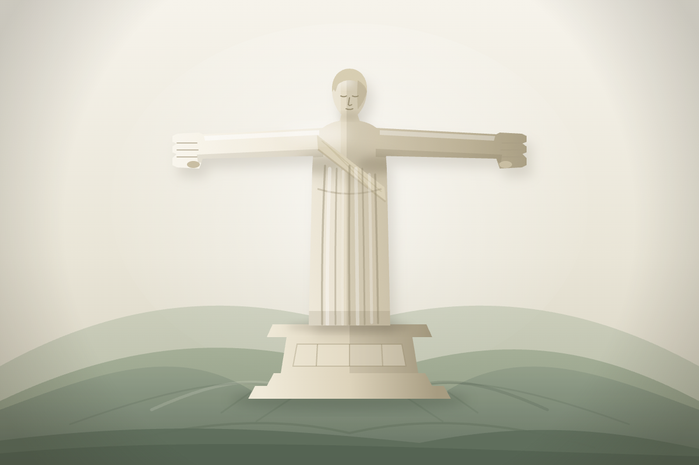
SVG
7.5/10Soft sculptural shading and clear arm span; hands and neck are notably blocky.
24.2s · $0.00628 · 12,512 completion tokensOpen artwork
Tower Bridge
Create a precise isometric-style Tower Bridge scene over the Thames: two matching stone Gothic towers capped by blue-gray pointed roofs, two high-level walkways joining the towers, a lower road deck with the two bascule leaves closed, blue suspension elements extending toward both shores. Include tower arches, warm stone masonry hints and calm water. Use an orthographic camera and clean detailed miniature style.
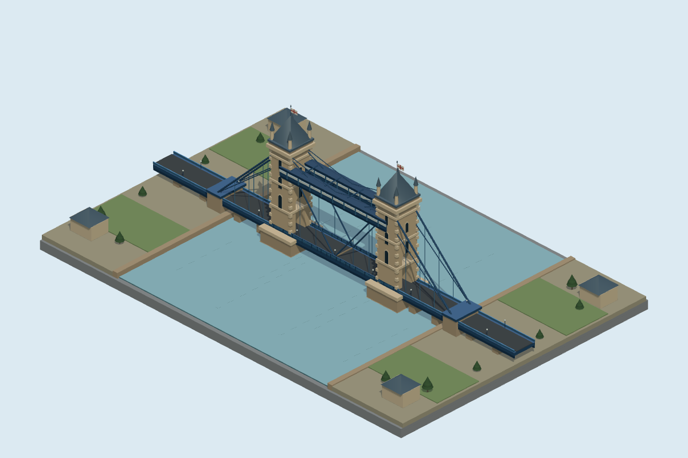
THREE
8/10Full isometric miniature with both towers, decks and suspension in spatial context.
33.3s · $0.00858 · 17,092 completion tokensOpen artwork
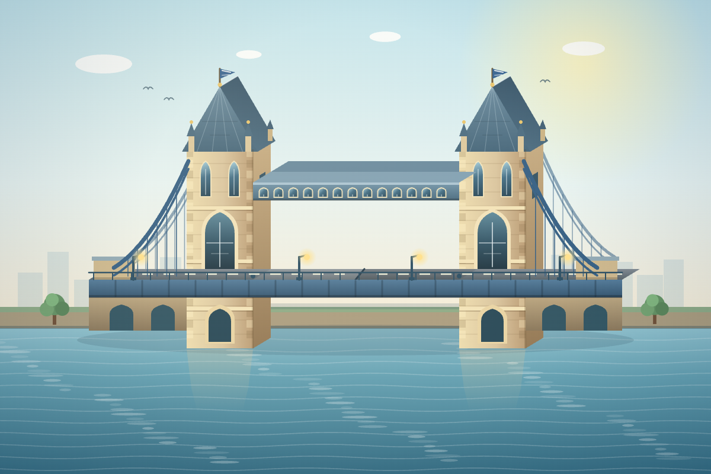
CANVAS
8/10Detailed towers and blue suspension with attractive water; uses near-elevation rather than requested isometric view.
42.4s · $0.00982 · 19,579 completion tokensOpen artwork
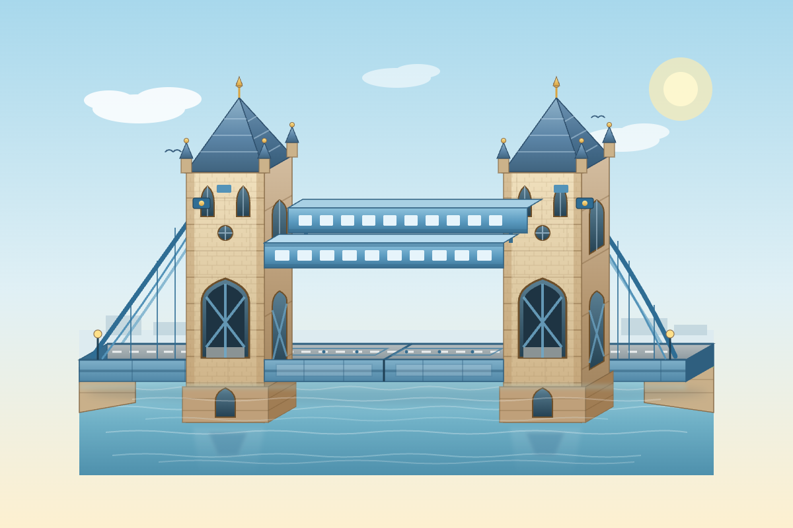
SVG
7.5/10Crisp architectural detailing and paired upper walkways; flat viewpoint and composition sit near frame edges.
52.3s · $0.01522 · 30,387 completion tokensOpen artwork
Separate expanded-cap and repaired variants
Original scores above remain unchanged. Both expanded samples stopped normally and rendered cleanly. Their API completion counts were below32k, so success alone does not establish a causal cap effect. Expanded calls cost $0.02327232, bringing new inference total to $0.21479712. The Opera House repair completes previously interrupted shell drawing.